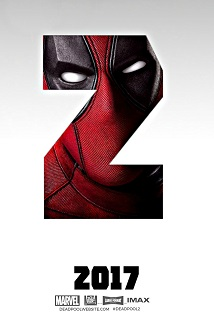

Em 6 de abril de 2016 Ryan Reynolds assinou oficialmente como protagonista desta
sequência.
Negasonic Teenage Warhead, Colossus e Dopinder são os únicos personagens confirmados até o
momento.

O Lançamento estava marcado para Nov/2017, mas com a saída do diretor Tim Miller o estudio não quis
criar espectativas nos fãns.